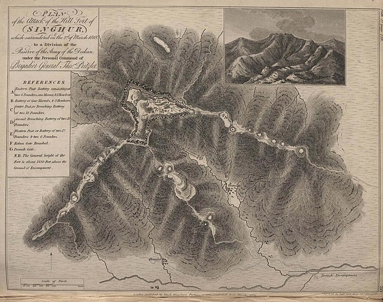
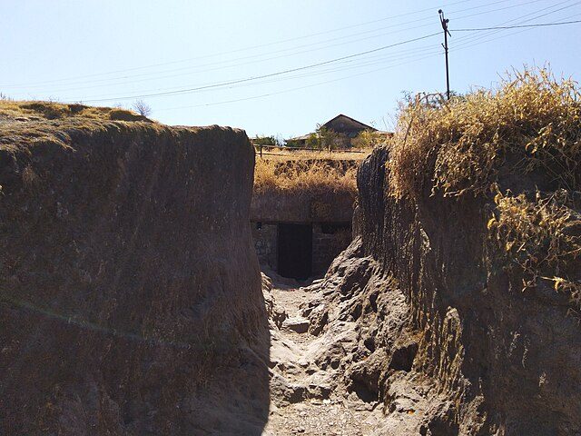
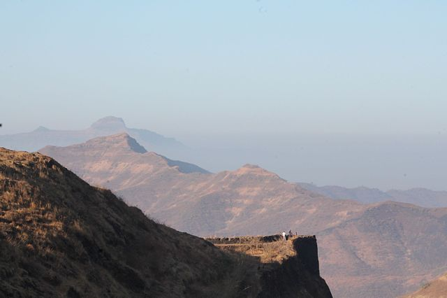
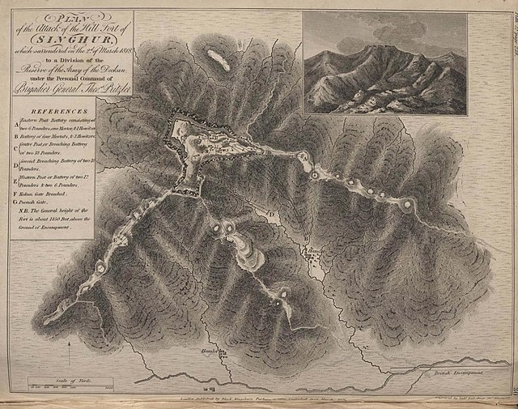
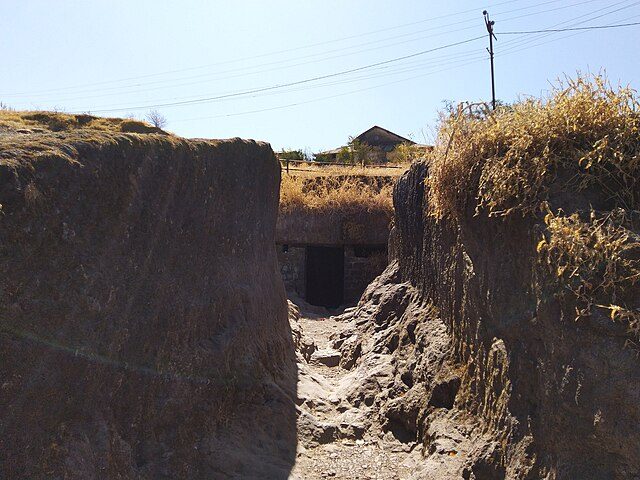
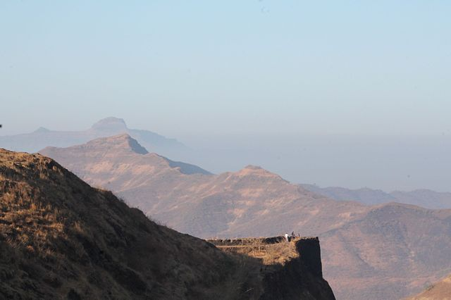

Sinhagad
 





About
Sinhagad Fort, located near Pune in Maharashtra, India, is a historic fortress known for its strategic significance and rich history. Originally known as Kondhana Fort, it was built during the era of the Maratha Empire and later captured by Chhatrapati Shivaji Maharaj in a legendary battle.
The fort is situated on a hill in the Sahyadri mountain range, providing breathtaking views of the surrounding landscape. It played a pivotal role in defending the region against invasions and served as a crucial military outpost.
Sinhagad Fort is famous for the heroic tale of Tanaji Malusare, a brave Maratha warrior who led a successful night mission to recapture the fort from the Mughals. This event, known as the Battle of Sinhagad, is celebrated for its display of valor and loyalty.
The fort features impressive structures such as gates, bastions, and a memorial dedicated to Tanaji Malusare. Visitors can explore the historical ruins, enjoy scenic trails, and experience the fort's majestic ambiance.
Today, Sinhagad Fort is a popular tourist attraction, drawing history enthusiasts, trekkers, and nature lovers alike. It stands as a symbol of Maratha pride and bravery, offering visitors a glimpse into the glorious past of the region.